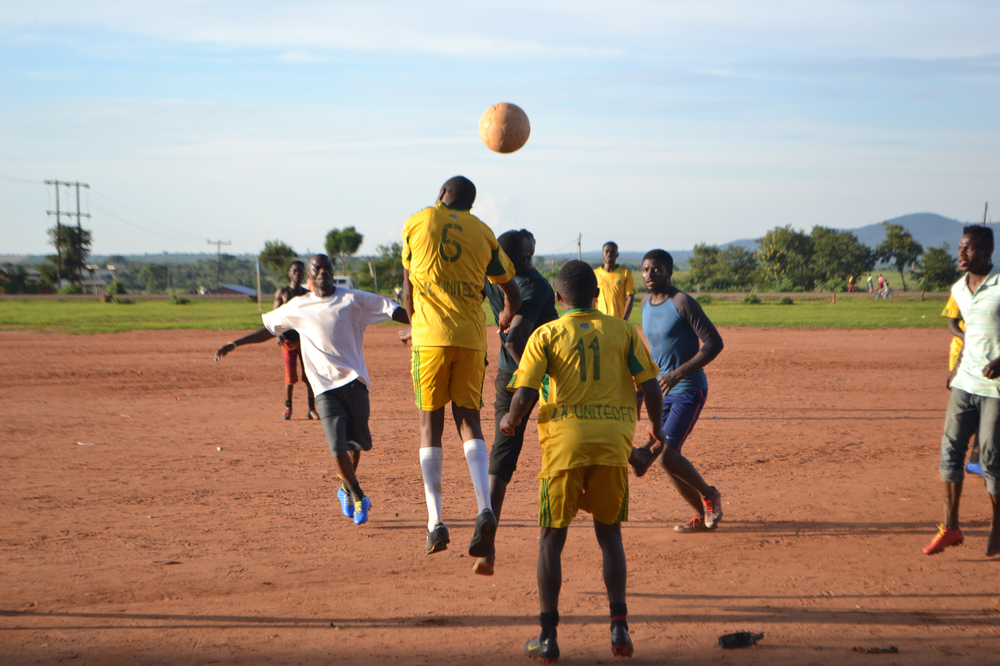

Technology
Students Develop Low-Cost Solar Irrigation for Rural Communities
MUBAS engineering students deploy cost-effective solar water pumps empowering smallholders in Dowa to cultivate through dry winter months.


MUBAS engineering students deploy cost-effective solar water pumps empowering smallholders in Dowa to cultivate through dry winter months.
A multi-district initiative connects rural schools with computer labs, closing the digital divide for thousands of Malawian secondary pupils.

Centuries of Malawian cultural manuscripts and academic dissertations are made freely accessible to university students through open portals.

Over 50,000 indigenous cedar saplings planted as grassroots youth conservation groups collaborate to restore critical watershed reserves.
Mobile trading platforms engineered in Lilongwe enable smallholder farmer cooperatives to secure fair marketplace rates across Malawi.

Community coaches provide structured athletic coaching, academic tutoring, and life skills to over 600 young aspiring football stars.

Young delegates representing all 28 districts debate budget allocations for youth skills training and digital economy startup financing.